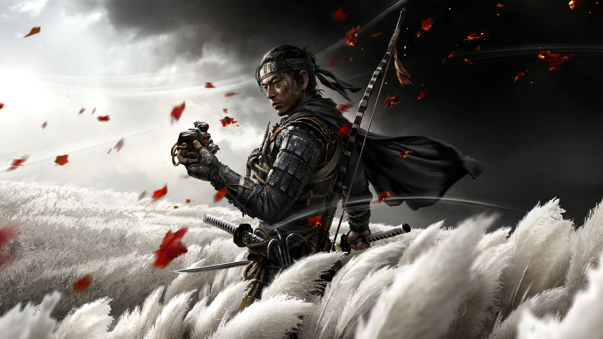
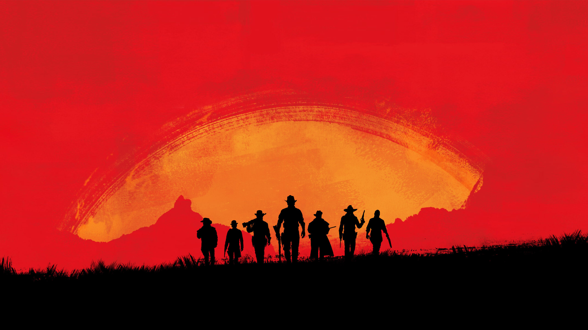
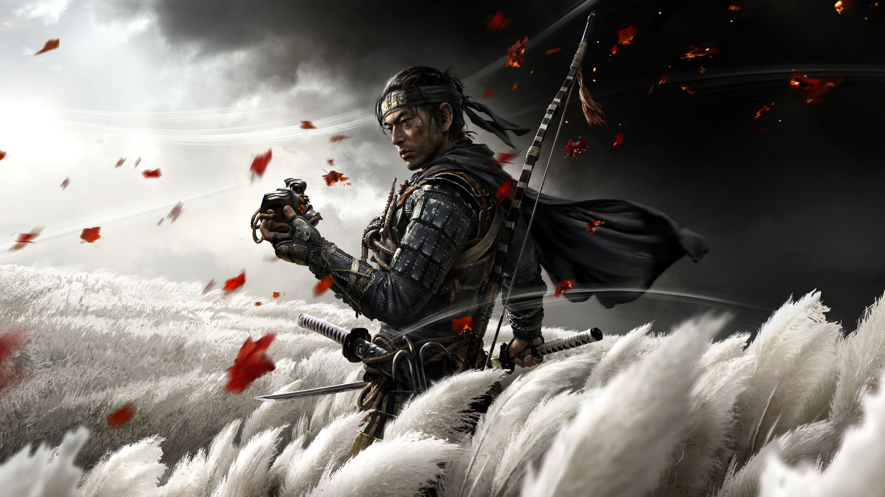
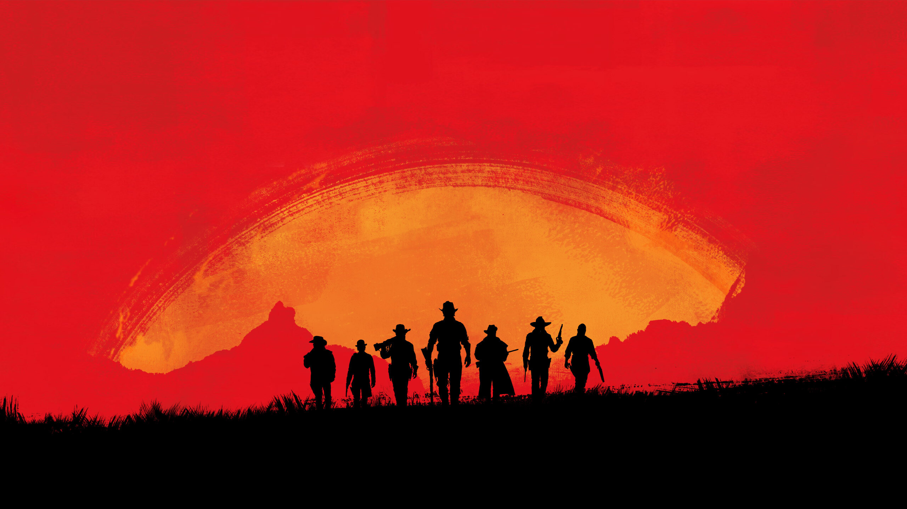

Our Top 5 Of All Time
This list was carefully compiled over many reviews (and hours) so here is the Top 5 games we think deserve that Hall Of Fame as of 2024
5th Fifa/EAFC
4th Call Of Duty
3RD GTA

2ND Elden Ring